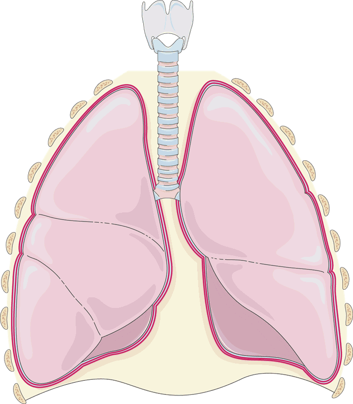
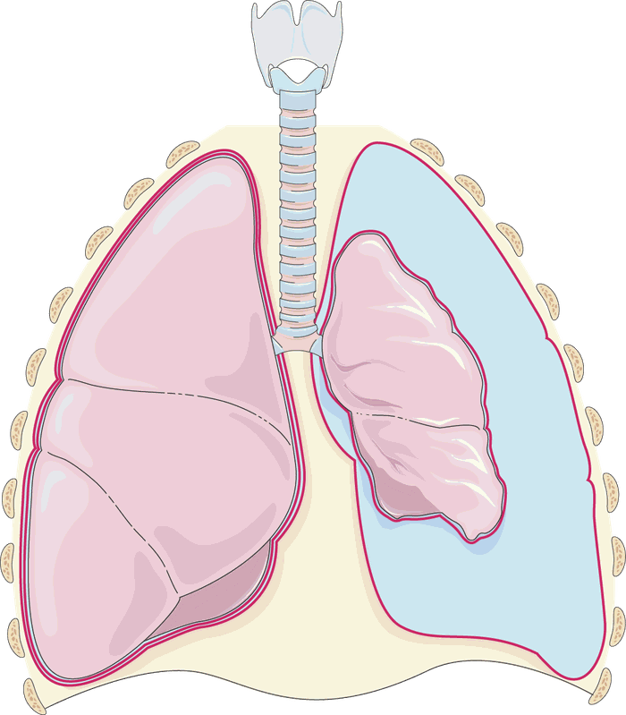
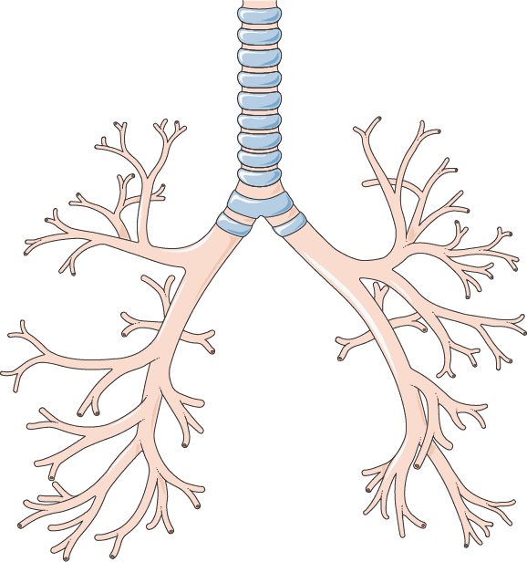
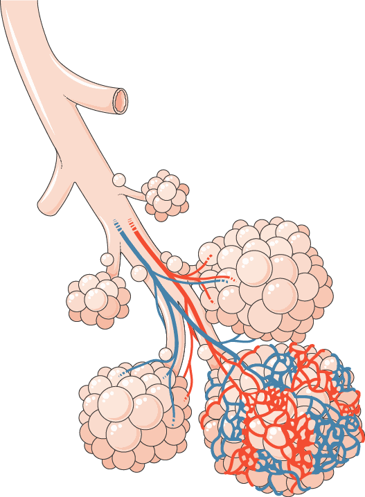

Toraks Anatomisi
Genel anatomi, nirengi noktaları ve cerrahi korelasyonlar tek sayfada. Bölümler arasında üstteki sekmelerle geçiş yapabilirsiniz.
Toraks Anatomisi
Göğüs cerrahisinde her girişimin (torasentez, tüp torakostomi, torakotomi) ve her görüntülemenin doğru yorumlanmasının temeli toraks anatomisidir. Bu sayfada göğüs duvarından mediastene, hava yollarından diyaframa kadar klinikte en çok işinize yarayacak anatomik bilgileri bulacaksınız.
1. Göğüs kafesi
Göğüs kafesi; arkada 12 torakal vertebra, yanlarda 12 çift kot ve önde sternumdan oluşur. Akciğerleri, kalbi ve büyük damarları korur; solunum hareketlerinin iskeletini oluşturur.
Kotlar
- Gerçek kotlar (1.–7.): Kendi kıkırdaklarıyla doğrudan sternuma bağlanır.
- Yalancı kotlar (8.–10.): Kıkırdakları bir üstteki kotun kıkırdağına katılarak sternuma dolaylı bağlanır; birlikte kot kavsini (arkus kostarum) oluştururlar.
- Yüzen kotlar (11.–12.): Ön uçları serbesttir, sternuma bağlanmaz.
- Birinci kot en kısa, en geniş ve en yassı kottur; klavikulanın altında yer alır ve üzerinden subklavyen arter ve ven geçer.
- Kotların ön uçları kıkırdakla devam eder; kıkırdak grafide görünmez.
Sternum
- Üç bölümden oluşur: manubrium, korpus ve ksifoid çıkıntı.
- Manubrium ile korpusun birleştiği yer sternal açıdır (Louis açısı); elle kolayca hissedilir ve buraya 2. kot bağlanır. Kot sayımına buradan başlanır.
Toraks girişi ve çıkışı
- Toraks girişi (apertura thoracis superior): T1 vertebra, birinci kotlar ve manubrium ile sınırlıdır. Trakea, özofagus, büyük damarlar ve sinirler buradan geçer.
- Toraks çıkışı (apertura thoracis inferior): T12 vertebra, alt kotlar, kot kavsi ve ksifoid ile sınırlıdır; diyafram tarafından kapatılır.
2. İnterkostal aralık
İki kot arasındaki aralıkta dıştan içe eksternal, internal ve en içte (innermost) interkostal kaslar bulunur. İnterkostal ven, arter ve sinir (yukarıdan aşağıya VAN sırasıyla), her kotun alt kenarındaki oluk (sulcus costae) içinde, internal ve innermost kaslar arasında seyreder.
Klinik kural: Torasentez, tüp torakostomi ve interkostal blokta iğne veya tüp alttaki kotun üst kenarından girilir. Böylece üstteki kotun alt kenarında seyreden damar-sinir paketi korunur.
3. T4 seviyesi: önemli bir referans noktası
Tüm nirengi noktaları ve omur seviyeleri için: Toraks Anatomisi Semineri → Nirengi noktaları.
Sternal açıdan arkaya çizilen hayali yatay düzlem yaklaşık T4–T5 vertebra aralığına denk gelir. Toraksın birçok önemli yapısı bu düzlemde yer aldığı için hem anatomide hem de grafi ve BT yorumunda pratik bir referanstır:
- Sternal açı (Louis açısı) ve 2. kotun sternuma bağlandığı yer
- Trakeanın sağ ve sol ana bronşlara ayrıldığı yer (karina)
- Mediastenin üst ve alt mediasten olarak ayrıldığı düzlem
- Arkus aortanın başlangıç ve bitiş seviyesi
- Azigos venin sağ ana bronşun üzerinden kavis yaparak vena kava superiora döküldüğü yer
- Duktus torasikusun özofagusun sağından soluna geçtiği bölge
4. Plevra
- Her akciğeri saran iki yapraklı seröz zardır: akciğerin yüzeyini örten viseral plevra ve göğüs duvarını, diyaframı ve mediasteni döşeyen paryetal plevra.
- İki yaprak arasındaki potansiyel boşluk plevral boşluktur; normalde birkaç mL kayganlaştırıcı sıvı içerir. Plevral boşluktaki basınç atmosfer basıncından düşüktür (negatif basınç); akciğerin açık kalmasını bu sağlar. Boşluğa hava girmesi pnömotoraks, sıvı toplanması efüzyon, kan toplanması hemotoraks olarak adlandırılır.
- Paryetal plevra ağrıya duyarlıdır (interkostal ve frenik sinirler); viseral plevrada ağrı duyusu yoktur. Bu nedenle girişimlerde lokal anestezi paryetal plevraya kadar uygulanır.
- Sinüsler (resesler): Paryetal plevranın kıvrım yaptığı, akciğerin tam dolduramadığı alanlardır. En önemlisi kostofrenik sinüstür; sıvı ilk burada toplanır. Ayrıca kardiyofrenik ve kostomediastinal sinüsler bulunur.
- Plevra, apekste birinci kotun yaklaşık 2–3 cm üzerine (boyun tabanına) kadar uzanır; bu nedenle boyun tabanına yapılan girişimler (örneğin subklavyen kateter) pnömotoraksa yol açabilir.


Görsel: Servier Medical Art, CC BY 4.0 lisansı ile; boyutlandırılmış, Türkçe açıklama eklenmiştir.
5. Akciğerler, loblar ve segmentler
| Sağ akciğer | Sol akciğer | |
|---|---|---|
| Lob | 3 (üst, orta, alt) | 2 (üst, alt); üst lobun lingula bölümü sağ orta lobun karşılığıdır |
| Fissür | Major (oblik) ve minör (horizontal) | Yalnızca major (oblik) |
| Segment | 10 | 8–10 (apikal ve posterior segment "apikoposterior", anterior ve medial bazal segment "anteromedial" olarak birleşik kabul edilir) |
| Özellik | Daha büyük ve kısa; altında karaciğer olduğu için sağ diyafram daha yüksektir | Daha dar ve uzun; kalp nedeniyle önde kardiyak çentik (incisura cardiaca) bulunur |
Segmentler
Sağ akciğer
- Üst lob: apikal, posterior, anterior
- Orta lob: lateral, medial
- Alt lob: süperior, medial bazal, anterior bazal, lateral bazal, posterior bazal
Sol akciğer
- Üst lob: apikoposterior, anterior, süperior lingular, inferior lingular
- Alt lob: süperior, anteromedial bazal, lateral bazal, posterior bazal
Her segmentin kendi bronşu ve pulmoner arter dalı vardır; bu yüzden segment, cerrahi olarak ayrı çıkarılabilen en küçük anatomik birimdir (segmentektomi).
6. Trakea ve bronş ağacı
- Trakea boyunda krikoid kıkırdağın altından (yaklaşık C6) başlar, yaklaşık 10–12 cm uzunluğundadır ve T4–T5 seviyesinde karinada ikiye ayrılır. Önde ve yanlarda C şeklinde kıkırdak halkalar (16–20 adet), arkada ise özofagusa komşu kas-zar yapı (membranöz bölüm) bulunur.
- Sağ ana bronş sola göre daha kısa, geniş ve dikeydir; bu nedenle aspire edilen yabancı cisimler daha sık sağ tarafa gider.
- Sol ana bronş daha uzun ve yataydır; arkus aortanın altından ve sol pulmoner arterin altından geçer.
- Karina açısı normalde yaklaşık 55–70°'dir; belirgin genişlemesi subkarinal lenfadenopati veya kitleyi düşündürür.

Hava yolu dallanması
Trakeadan alveollere kadar hava yolu yaklaşık 23 kez dallanır (jenerasyon):
- İletici bölge (yaklaşık ilk 16 dallanma): Trakea, ana bronşlar, lober ve segmenter bronşlar, bronşioller ve terminal bronşioller. Burada gaz değişimi olmaz; bu hacme anatomik ölü boşluk denir. Örneğin 500 mL'lik bir soluk hacminin yaklaşık 150 mL'si ölü boşlukta kalır, gaz değişimine yaklaşık 350 mL katılır.
- Solunum bölgesi (yaklaşık 17.–23. dallanmalar): Respiratuvar bronşioller, alveoler kanallar ve alveol keseleri. Gaz değişimi burada gerçekleşir.
7. Alveol ve gaz değişimi
- Alveol duvarında iki tip hücre bulunur: Tip 1 pnömositler ince yapılıdır ve gaz değişim yüzeyinin büyük bölümünü oluşturur; Tip 2 pnömositler sürfaktan üretir.
- Sürfaktan alveol içindeki yüzey gerilimini azaltarak alveolün ekspiryumda kapanmasını (kollabe olmasını) önler. Oksijenin alveolden kapillere, karbondioksitin kapillerden alveole geçebilmesi için alveolün açık kalması gerekir.
- Alveolün içi hava dışında bir şeyle dolarsa gaz değişimi bozulur ve hipoksemi gelişir: sıvıyla dolması pulmoner ödem, kanla dolması pulmoner hemoraji (örneğin kontüzyon), iltihabi eksüdayla dolması pnömoni, tümör hücreleriyle dolması malignite (örneğin lepidik büyüyen adenokarsinom) anlamına gelir.
- Sıvıyla dolan alveoller ekspiryumda kapanıp inspiryumda açılırken oluşan ses, oskültasyonda duyulan raldir.
- Gaz değişimini bozan diğer nedenler: alveole hava ulaşamaması (atelektazi, yabancı cisim, pnömotoraks), interstisyumun kalınlaşması (interstisyel hastalıklar, fibrozis) ve kan akımının bozulması (pulmoner emboli).

Görüntülemedeki karşılığı: Alveollerde hava azalmış ama tamamen kaybolmamışsa ve damarlar ile bronş duvarları hâlâ seçilebiliyorsa buzlu cam görünümü; alveoller tamamen dolmuşsa ve bu yapılar seçilemiyorsa konsolidasyon görünümü oluşur.
8. Akciğer hilusu
Hilus, ana bronş, pulmoner arter, pulmoner venler, bronşiyal damarlar, lenf damarları, lenf nodları ve sinirlerin akciğere girip çıktığı bölgedir.
- Sağ hilusta sağ ana bronş en üstte ve arkada (eparteriyel bronş: sağ üst lob bronşu pulmoner arterin üzerinden çıkar).
- Sol hilusta sol pulmoner arter en üsttedir ve sol ana bronşun üzerinden kavis yaparak geçer. Bu nedenle grafide sol hilus, sağ hilustan yaklaşık 0,5–2,5 cm daha yukarıda görülür.
- Pulmoner venler her iki tarafta da hilusun en önünde ve en altında yer alır.
9. Mediasten
İki plevral boşluk arasında, sternumdan vertebralara, toraks girişinden diyaframa kadar uzanan bölgedir. Sternal açıdan T4–T5 aralığına çizilen düzlem mediasteni üst ve alt olarak ikiye ayırır; alt mediasten de perikarda göre ön, orta ve arka bölümlere ayrılır.
| Bölüm | Başlıca içerik | Sık görülen kitleler |
|---|---|---|
| Üst | Timus, arkus aorta ve dalları, brakiyosefalik venler, VCS'nin üst bölümü, trakea, özofagus, duktus torasikus, frenik ve vagus sinirleri | Guatr uzanımı, timik kitleler |
| Ön | Timus artığı, yağ dokusu, lenf nodları, internal torasik damarlar | Timoma, teratom/germ hücreli tümör, lenfoma, retrosternal guatr ("4T") |
| Orta | Kalp ve perikard, asendan aorta, pulmoner trunkus, VCS, karina ve ana bronşlar, frenik sinirler, lenf nodları | Lenfadenopati, bronkojenik ve perikardiyal kistler |
| Arka | İnen aorta, özofagus, azigos ve hemiazigos venler, duktus torasikus, vagus, sempatik zincir | Nörojenik tümörler, özofagus kaynaklı kitleler |
Klinik önemi olan sinirler
- Frenik sinir (C3–C5): Perikardın yanından inerek diyaframı innerve eder. Yaralanması aynı taraf diyaframında felç ve yükselmeye yol açar.
- Rekürren laringeal sinir: Solda arkus aortanın, sağda subklavyen arterin altından dolanarak yukarı döner. Sol taraf mediastinal cerrahide ve sol hiler tümörlerde etkilenebilir; ses kısıklığına yol açar.
10. Büyük damarlar
- Aorta: Sol ventrikülden asendan aorta olarak çıkar, arkus aorta olarak sola ve arkaya kavis yapar, vertebraların solunda inen (desendan) aorta olarak devam eder.
- Arkus aortanın üç dalı (sağdan sola): truncus brachiocephalicus (sağ subklavyen ve sağ ana karotis artere ayrılır), sol ana karotis arter ve sol subklavyen arter.
- Pulmoner arterler: Sağ ventrikülden çıkan pulmoner trunkus, sağ ve sol pulmoner arterlere ayrılır. BT anjiyografide bu arterler ve dalları pulmoner emboli açısından değerlendirilir.
- Venöz dönüş: Subklavyen ve internal juguler venler birleşerek her iki tarafta brakiyosefalik veni oluşturur. Sol brakiyosefalik ven arkus aortanın önünden sağa geçer; iki brakiyosefalik ven birleşerek vena kava superioru oluşturur ve sağ atriyuma dökülür.
- Azigos ven sağda vertebraların önünden yukarı çıkar, T4 seviyesinde sağ ana bronşun üzerinden kavis yaparak vena kava superiora dökülür.
11. Diyafram
- Göğüs ve karın boşluğunu ayıran, kubbe şeklinde, solunumun temel kasıdır (musculus thoracoabdominalis). Kasıldığında kubbe aşağı iner, toraksın dikey çapı ve hacmi artar ve hava içeri girer. Kubbenin her 1 cm inişi, kaynaklara göre değişmekle birlikte yaklaşık birkaç yüz mL (anlatımlarda yaklaşık 200 mL) hava girişi sağlar.
- Sağ kubbe, altındaki karaciğer nedeniyle soldan genellikle 1–2 cm daha yüksektir.
- Sinir: Frenik sinir (C3–C5) ile motor innervasyon alır. Diyafram irritasyonu ağrısı omuza yansıyabilir.
Diyaframdaki açıklıklar
| Seviye | Açıklık | Geçen yapılar |
|---|---|---|
| T8 | Vena kava foramenı | Vena kava inferior, sağ frenik sinir dalları |
| T10 | Özofagus hiatusu | Özofagus, vagus sinirleri |
| T12 | Aort hiatusu | Aorta, duktus torasikus, azigos ven |
Diyafram rüptürü: Künt veya delici travmada diyafram yırtılabilir; karın içi organlar (mide, kolon, dalak, karaciğer) göğüs boşluğuna geçebilir. Sol tarafta daha sık görülür, çünkü sağ tarafı karaciğer korur. Tanıda BT'nin yanında, şüphe varsa cerrahi eksplorasyon önemlidir.
12. Klinik uygulamada anatomi
Tüp torakostomi: güvenli üçgen
Göğüs tüpü genellikle güvenli üçgenden yerleştirilir:
- Önde: pektoralis majör kasının lateral kenarı
- Arkada: latissimus dorsi kasının lateral kenarı
- Altta: 5. interkostal aralık (yaklaşık meme başı hizası)
- Tepede: aksilla
Bu bölgede büyük kas ve damar bulunmaz; diyafram ve karın organlarının yaralanma riski düşüktür. Tüp, alttaki kotun üst kenarından geçirilir.
Torasentez
Serbest plevral sıvıda giriş genellikle arkada, skapula ucunun altında, orta ile arka aksiller hat arasından ve sıvı seviyesinin bir aralık altından (çoğunlukla 7.–9. interkostal aralıklar), yine alttaki kotun üst kenarından yapılır. Diyafram ve karın organlarını yaralamamak için çok aşağıdan girilmemelidir; mümkünse ultrasonografi eşliğinde yapılması önerilir.
Kot kırıkları ve eşlik eden yaralanmalar
- 1.–2. kot kırıkları yüksek enerjili travmayı gösterir; subklavyen damarlar ve brakiyal pleksus yaralanması açısından dikkat edilmelidir.
- Alt kot (10.–12.) kırıkları karaciğer, dalak ve böbrek yaralanmaları açısından uyarıcıdır.
Kaynak: Bu sayfadaki T4 seviyesi, kotlar, hava yolu dallanması, alveol fizyolojisi, büyük damarlar ve diyafram bölümleri, Dr. Hilmi Keskin'in YouTube kanalındaki toraks tomografisi, maket üzerinde akciğer grafisi, diyafragma rüptürü, torasentez ve COVID-19 tomografisi anlatımlarından yararlanılarak ve standart anatomi bilgileriyle tamamlanarak hazırlanmış; anatomik bilgiler Netter Atlas of Human Anatomy (8. baskı) ile karşılaştırılarak doğrulanmıştır.
Seminer
Toraks Anatomisi
Toraks sınırları, nirengi noktaları, göğüs duvarı katmanları, damar ve sinir anatomisi ve mediastinal lenf nodu istasyonları.
1Toraks sınırları
| Sınır | Yapılar |
|---|---|
| Üst sınır Apertura thoracis superior (thoracic inlet) | Önde incisura jugularis, yanlarda 1. kaburgalar ve kıkırdakları, arkada T1 omur gövdesi |
| Alt sınır Apertura thoracis inferior (thoracic outlet) | Diyafram ile karın boşluğundan ayrılır. Önde processus xiphoideus, yanlarda arcus costalis (7.–10. kıkırdak kaburgalar) ile 11.–12. serbest kaburgalar, arkada T12 omur gövdesi |
| Ön sınır | Sternum ve kostal kıkırdaklar |
| Arka sınır | Torakal omurlar (T1–T12) ve kaburgaların arka bölümleri |
| Yan sınır | Kaburgalar ve interkostal kaslar |
Bu sınırlar neye göre belirlenmiştir?
- Kemik topografyası: Göğüs kafesi kemik bir koruma alanı oluşturduğu için sınırlar doğrudan sternum, omurlar ve kaburga hatlarına göre belirlenir.
- Kas ve basınç bölünmesi: Diyafram, torasik negatif basınç ile abdominal pozitif basıncı birbirinden ayıran ana kas olduğu için doğal alt sınırdır.
- Damar-sinir geçiş hatları: Üst sınır, boyundan göğüs boşluğuna geçen büyük damarların (a. ve v. subclavia) ve sinirlerin geçiş açıklığına denk gelecek şekilde tanımlanmıştır.
2Nirengi (landmark) noktaları
Nirengi noktaları; fizik muayenede, radyolojik incelemede ve tüp torakostomi, torasentez gibi torasik girişimlerde yön bulmayı sağlayan, elle hissedilebilen kemik noktalarıdır.
Ön ve yan duvar nirengi noktaları
| Nirengi noktası | Tanım | Omur seviyesi |
|---|---|---|
| İncisura jugularis (suprasternal çentik) | Manubriumun üst kenarı | T2–T3 |
| Angulus sterni (Louis açısı) | Manubrium ile korpus sterninin birleşim yeri; 2. kaburga tam bu düzlemde eklemleşir. İnterkostal aralıkları saymanın başlangıç noktasıdır. | T4–T5 disk |
| Processus xiphoideus | Sternumun en alt ucu (ksifosternal eklem) | T9 |
| Arcus costalis | 7.–10. kıkırdak kaburgaların oluşturduğu alt ön kenar | – |
Manubrium halk arasında "sap", "bıçak sapı" veya "kabza" olarak da anılır.
3Angulus sterni (Louis açısı) ve T4–T5 düzlemi
Manubriosternal eklem hizasındaki bu düzlem, klinik toraks anatomisinin en kritik enine kesit düzlemidir ve T4–T5 intervertebral diskine denk gelir. Bu seviyede:
- Arcus aortae: Aorta ascendens burada sona erer; arkus bu seviyede başlar ve yine bu seviyede biterek aorta descendens olarak devam eder.
- Vena cava superior: Brakiyosefalik venlerin birleşmesiyle oluşan VCS, bu seviyede sağ atriuma girmek üzere aşağı iner.
- Truncus pulmonalis bifurkasyonu: Sağ ve sol pulmoner artere bu düzlemde ayrılır.
- Bifurcatio tracheae (karina): Trakea sağ ve sol ana bronşlara ayrılır.
- Ductus thoracicus: Omurganın sağından soluna geçer.
- Sol n. laryngeus recurrens: Arcus aortaenın altından bu düzlem seviyesinde dolanarak boyna geri döner.
- Vena azygos kavsi sağ ana bronşun üzerinden VCS'ye dökülür.
4Arka duvar nirengi noktaları ve topografik çizgiler
Arka duvar nirengi noktaları
- Vertebra prominens (C7 spinöz çıkıntısı): Boynun arkasında en belirgin hissedilen çıkıntı; T1 seviyesini bulmak için kullanılır.
- Spina scapulae: T3 omur seviyesine denk gelir.
- Angulus inferior scapulae: Kol yanda serbestken T7 omur seviyesini ve 7. interkostal aralığı gösterir (torasentezde yön bulmak için kullanılır).
Topografik hizalama çizgileri
- Linea medioclavicularis: Klavikulanın tam ortasından dikey inen çizgi.
- Linea axillaris anterior, media ve posterior: Ön, orta ve arka aksiller hatlar. Tüp torakostomide 4.–5. interkostal aralıktaki güvenli üçgen bu hatlar esas alınarak tanımlanır.
5Göğüs duvarı kasları
1. katman: Ekstrinsik (aksiyoapendiküler) kaslar
Göğüs kafesini dıştan bir zırh gibi sarar. Asıl görevleri kol ve omuz hareketleridir; kollar sabitlendiğinde zorlu solunuma yardım ederler. Torakotomide ciltten sonra karşılaşılan ilk bariyerdir.
- Ön duvar: M. pectoralis major (klavikula, sternum ve kıkırdak kaburgalardan humerusa; ön duvarın en yüzeyel ve geniş kası) ve m. pectoralis minor (3.–5. kaburgalardan processus coracoideusa).
- Yan duvar: M. serratus anterior, ilk 8–9 kaburgadan skapulanın iç (medial) kenarına uzanan testere dişi görünümlü kastır; n. thoracicus longus ile innerve edilir.
- Arka duvar: m. trapezius (en yüzeyel), m. latissimus dorsi (posterolateral torakotomide ekarte edilen veya kesilen ana kas) ve trapeziusun altında skapula ile omurga arasında mm. rhomboidei.
2. katman: İntrinsik (gerçek) göğüs duvarı kasları
Kaburgalar arasında yer alır ve göğüs kafesi hacmini değiştirerek temel solunum mekaniğini sağlar. Dıştan içe üç tabakadır:
- M. intercostalis externus: İnspiryum (kaburgaları kaldırır).
- M. intercostalis internus: Ekspiryum (kaburgaları indirir).
- M. intercostalis intimus: En iç tabaka. Nörovasküler paket (VAN), internus ile intimus arasında seyreder.
- M. transversus thoracis: Sternumun arka alt yüzünden 2.–6. kıkırdak kaburgaların iç yüzüne yelpaze gibi uzanır; a. thoracica interna bu kasın önünden geçer.
- Mm. subcostales: Özellikle alt torakal bölgede kaburgaların iç yüzünde bir veya iki kaburga atlayarak uzanan lifler.
3. katman: İç astar ve taban
- Fascia endothoracica: En iç kas tabakası ile paryetal plevra arasındaki bağ dokusu tabakası. Ekstraplevral diseksiyon bu plandan yapılır.
- Diafragma: Toraksın tabanını oluşturan temel solunum kası.
6Mediastinal büyük damarlar ve hilus
Mediastenin büyük damarları, hiler diseksiyonlarda ve mediastinal tümör cerrahisinde ana nirengi noktalarıdır.
Arteriyel yapılar
- Aorta: Aorta ascendens, arcus aortae (T4–T5 seviyesinden geçer ve boyun damarlarını verir) ve aorta descendens.
- Truncus pulmonalis: Sağ ventrikülden çıkar; Louis açısı hizasında sağ ve sol pulmoner artere ayrılır.
- Klinik önem: Sol pulmoner arter sol ana bronşun üzerinden, sağ pulmoner arter sağ ana bronşun önünden geçer. Pnömonektomide hilus yapılarının önden arkaya dizilimi (ven → arter → bronş) diseksiyon sırasını belirler.
Venöz yapılar
- Vena cava superior: Sağ ve sol brakiyosefalik venlerin birleşmesiyle oluşur, sağ atriuma dökülür.
- Vena cava inferior: Diyaframı T8 seviyesinde (foramen venae cavae) geçer ve hemen sağ atriuma açılır.
- Venae pulmonales: Her akciğerden ikişer (süperior ve inferior) çıkar, oksijenlenmiş kanı sol atriuma taşır.
Hilus dizilimi çizimi için: Cerrahi Korelasyonlar → Hilus.
7Göğüs duvarının kanlanması
Göğüs duvarı önden ve arkadan gelen güçlü bir anastomoz ağıyla beslenir; torakotomi kanamalarının büyük bölümü bu sistemden kaynaklanır.
- A. thoracica interna (internal mammarian arter, LIMA/RIMA): Subklavyen arterden çıkar, sternumun 1–2 cm lateralinde, kıkırdak kaburgalar ile m. transversus thoracis arasında aşağı iner. Koroner bypass cerrahisinde sol internal mammarian arter (LIMA) altın standarttır. Sternotomide ve parasternal insizyonlarda yaralanma riski yüksektir; şiddetli ön duvar kanamalarının baş sorumlusudur.
- Anterior interkostal arterler: İlk 6 aralıkta a. thoracica internadan, sonrakilerde onun dalı a. musculophrenicadan çıkar.
- Posterior interkostal arterler: İlk 2 aralıkta subklavyen sistemden (truncus costocervicalis), 3.–11. aralıklarda doğrudan aorta descendensten çıkar ve VAN paketi içinde seyreder.
- Azigos / hemiazigos sistemi: Göğüs duvarının ve interkostal aralıkların venöz kanını toplar: sağda v. azygos, solda v. hemiazygos ve v. hemiazygos accessoria.
Klinik önem: V. azygos, sağ ana bronşun üzerinden kavis yaparak (azigos arkı) VCS'ye dökülür. Sağ torakotomide ve VATS'ta, özellikle trakeoözofageal fistül onarımında ve 4R lenf nodu diseksiyonunda, bu ark en önemli nirengi noktasıdır; mediastene ulaşmak için sıklıkla bağlanıp kesilir.
8Toraksın ana sinirleri ve seyirleri
Toraks içindeki majör sinirler, hilus ve mediastinal lenf nodu diseksiyonlarında yüksek risk altındadır.
N. phrenicus (C3, C4, C5)
- Diyaframın tek motor siniridir; akciğer hilusunun önünden geçer.
- Sağ frenik sinir VCS ve sağ atriuma komşu, sol frenik sinir sol ventrikül üzerindeki perikard boyunca seyreder.
- İyatrojenik yaralanması aynı taraf diyaframın felcine ve yükselmesine (elevasyon) yol açar.
N. vagus (X. kranial sinir)
- Torasik organların parasempatik innervasyonunu sağlar; akciğer hilusunun arkasından geçer ve özofagus çevresinde pleksus oluşturarak diyaframdan aşağı iner.
N. laryngeus recurrens
- Sağ: Boyun kökünde sağ subklavyen arterin altından dolanır; toraksa pek girmez.
- Sol: Toraksa girer, arcus aortae ve ligamentum arteriosumun altından dolanarak boyna döner.
- Klinik önem: Aortopulmoner pencere (subaortik, istasyon 5) lenfadenektomisinde yaralanma riski yüksektir; hasarı sol vokal kord paralizisi ve ses kısıklığı yapar.
Truncus sympathicus (sempatik zincir)
- Omurganın iki yanında, kostovertebral eklemler hizasında uzanan gangliyonlar zinciridir.
- ETS (endoskopik torasik sempatektomi): Hiperhidroz ve yüz kızarmasında altın standart olan bu ameliyatta, şikâyetin bölgesine göre (el, koltuk altı, yüz) T2, T3 veya T4 gangliyonları klipslenir veya koterize edilir.
- Horner sendromu riski: ETS'de veya Pancoast tümörü rezeksiyonunda stellat ganglion (T1 seviyesi) hasar görürse aynı tarafta pitozis, miyozis ve anhidroz gelişir.
- Splanknik sinirler: Alt torakal gangliyonlardan (T5–T12) çıkan dallar n. splanchnicus major, minor ve imus'u oluşturur; diyaframı geçerek karın organlarının sempatik ve ağrı innervasyonunu sağlar. Pankreas kanseri gibi dirençli karın ağrılarında torakoskopik splanknikektomi ile ağrı palyasyonu yapılabilir.
9Toraks lenf nodları: IASLC istasyonları
Uluslararası Akciğer Kanseri Araştırmaları Birliği (IASLC) lenf nodu haritası, akciğer kanserinde evrelemeyi ve buna bağlı cerrahi/onkolojik tedavi kararını belirleyen evrensel standarttır. Haritanın temel kuralı N1 ile N2'yi ayıran sınırı bilmektir:
- N1 (aynı taraf hiler ve pulmoner): Mediastinal plevra yansımasının distalinde, viseral plevra içinde kalan nodlar. Rezeke edilen akciğerle birlikte çıkarılır.
- N2 (aynı taraf mediastinal): Plevra yansımasının dışında, mediasten içindeki nodlar; mediastinal lenfadenektomi ile ayrıca toplanır. Tümörün bu istasyonlara yayılması hastalığı evre III yapar ve genellikle kemoradyoterapi gerektirir.
N2 istasyonları (mediastinal: 1–9)
Bu istasyonlar büyük damarlar ve trakea çevresindedir; nirengi noktaları damar ve kıkırdak yapılara dayanır.
| İstasyon | Yeri | Nirengi noktası / sınır |
|---|---|---|
| 1 (alt servikal, supraklaviküler, sternal çentik) | Krikoid alt kenarı ile klavikulalar ve manubrium üst kenarı arası | Alt sınır: klavikulalar ve manubrium üst kenarı |
| 2R / 2L (üst paratrakeal) | Trakeanın sağı / solu | Alt sınır: sağda sol brakiyosefalik venin trakeayı kestiği alt kenar; solda arkus aortanın üst kenarı |
| 3a / 3p (prevasküler / retrotrakeal) | Büyük damarların önü / trakeanın arkası | Üstte toraks apeksi, altta karina seviyesi |
| 4R / 4L (alt paratrakeal) | 2. istasyonun hemen altı. Mediastinoskopi ve EBUS'ta en sık örneklenen nodlar. | Alt sınır: sağda (4R) azigos venin alt kenarı (azigos arkı bu nodların üzerinden geçer); solda (4L) sol pulmoner arterin üst kenarı |
| 5 (subaortik / aortopulmoner pencere) | Yalnız solda | Arkus aortanın altı, sol pulmoner arterin üstü, ligamentum arteriosumun lateralı. Sol n. laryngeus recurrens bu istasyonun içinden geçer; diseksiyonu risklidir. |
| 6 (para-aortik) | Yalnız solda | Asendan aorta ve arkus aortanın önü ve yanı, frenik sinirin önü |
| 7 (subkarinal) | Karinanın hemen altı | Sağ ve sol ana bronşlar arasındaki açı |
| 8 (paraözofageal) | Karina seviyesinin altı | Özofagus duvarına komşu |
| 9 (pulmoner ligaman) | Ligamentum pulmonale içinde | İnferior pulmoner venin altı |
N1 istasyonları (hiler, lober, periferik: 10–14)
| İstasyon | Yeri |
|---|---|
| 10 (hiler) | Plevra yansımasının (mediastenin bittiği yerin) hemen distalinde başlar; ana bronşlar ve hiler damarların çevresinde. N1 zonunun en proksimal istasyonu. |
| 11 (interlober) | Lober bronşların ayrıldığı çatallarda (sekonder karinalar). |
| 12, 13, 14 | Sırasıyla lober, segmenter ve subsegmenter bronşlara eşlik eden, parankim içindeki nodlar. |
10Hızlı tekrar: nirengi noktaları tablosu
| Nirengi noktası | Seviye / konum | Ne için kullanılır? |
|---|---|---|
| Vertebra prominens | C7 spinöz çıkıntısı | T1'i ve torakal omurları saymaya başlamak |
| İncisura jugularis | T2–T3 | Toraks girişinin ön sınırı |
| Spina scapulae | T3 | Arka duvarda seviye tahmini |
| Angulus sterni (Louis) | T4–T5 disk; 2. kaburga | Kaburga ve aralık sayımı; karina, arkus aorta, pulmoner trunkus bifurkasyonu, azigos arkı, üst/alt mediasten ayrımı |
| Angulus inferior scapulae | T7; 7. aralık | Arkadan torasentez yeri |
| Foramen venae cavae | T8 | VCI'nın diyaframı geçişi |
| Processus xiphoideus | T9 | Ön göğüs duvarının alt ucu |
| Arcus costalis | 7.–10. kıkırdak kaburgalar | Alt ön sınır; karaciğer ve dalak muayenesi |
| Güvenli üçgen | Pektoralis majör ve latissimus dorsi lateral kenarları, 5. aralık | Tüp torakostomi |
| A. thoracica interna | Sternumun 1–2 cm lateralı | Parasternal girişimlerde kaçınılacak hat |
| Azigos arkı | Sağ ana bronşun üzeri, T4 | Sağ torakotomi/VATS yön bulma; 4R alt sınırı |
| Arkus aorta üst kenarı | – | 2L istasyonunun alt sınırı |
| Ligamentum arteriosum | Arkus ile sol PA arası | İstasyon 5; sol rekürren sinirin dönüş yeri |
Bu sayfa As. Dr. Mustafa Türker'in Kayseri Şehir Hastanesi Göğüs Cerrahisi Kliniği'nde sunduğu "Toraks Anatomisi" seminerinden hazırlanmıştır. Sunumdaki atlas ve ders kitabı görselleri telif nedeniyle yerine şematik çizimler konmuştur; çizimler ölçekli değildir. Lenf nodu istasyonları IASLC haritasına göre sadeleştirilmiştir.
Cerrahi klinik semineri
Toraks Anatomisi ve Cerrahi Klinik Korelasyonları
Cerrahi yaklaşımlar, nörovasküler düzlemler ve komplikasyon yönetimi.
1Toraks duvarı ve cerrahi insizyon hatları
- Posterolateral torakotomi: Klasik akciğer rezeksiyonlarında altın standarttır. Latissimus dorsi ve serratus anterior kesilerek veya ekarte edilerek 4. veya 5. interkostal aralıktan girilir.
- Anterolateral torakotomi: Travma ve acil torakotomi vakalarında hızlı erişim sağlar.
- Aksiller (subaksiller) torakotomi: Kas koruyucu insizyondur. Lenf nodu biyopsileri ve sınırlı plevral işlemler için idealdir.
- Median sternotomi: Ön mediasten kitleleri, bilateral akciğer lezyonları ve kardiyak girişimlerde tercih edilir.
2İnterkostal nörovasküler demet ve tüp torakostomi
İnterkostal nörovasküler demet, kotun alt kenarındaki sulcus costae içinde yukarıdan aşağıya VAN sırasıyla seyreder: Vena, Arteria ve Nervus intercostalis. Ayrıntılı kesit çizimi için Toraks Anatomisi sayfasına bakabilirsiniz.
Cerrahi inci: Tüp torakostomi veya torasentez yapılırken kanamayı ve nevraljik ağrıyı önlemek için her zaman alttaki kotun üst kenarından girilmelidir. Kotun alt kenarına yakın çalışmak interkostal arter yaralanmasına ve masif hemotoraksa yol açabilir.
| İşlem / insizyon | Anatomik nirengi noktası | Kritik anatomik risk |
|---|---|---|
| Tüp torakostomi | 5. interkostal aralık, midaksiller hat ("güvenli üçgen") | İnterkostal arter yaralanması; diyafram ve karaciğer delinmesi |
| Torasentez | Skapula alt ucu hizası (7.–8. interkostal aralık), kotun üst kenarı | Pnömotoraks, akciğer laserasyonu, interkostal nörovasküler hasar |
| Sternotomi | İncisura jugularis ile ksifoid çıkıntı arası orta hat | Brakiyosefalik arter ve sol brakiyosefalik (innominat) ven yaralanması |
3Plevra, plevral resesler ve cerrahi drenaj
- Paryetal plevra: Somatik innervasyonludur (frenik ve interkostal sinirler); ağrıya oldukça duyarlıdır.
- Viseral plevra: Otonom innervasyonludur, ağrı duyusu yoktur. Akciğer parankimini örter ve fissürlerin içine kadar uzanır.
- Kostodiyafragmatik resesus: Plevral sıvının (efüzyon, hemotoraks, ampiyem) yerçekimiyle en çok biriktiği bağımlı alandır. Rezeksiyon veya drenaj sonrası göğüs tüpünün ucu buraya yönlendirilir.
4Trakeobronşiyal ağaç ve yabancı cisim / aspirasyon anatomisi
- Trakea, T4–T5 seviyesinde, sternal açı (angulus sterni) hizasında karinada iki ana bronşa ayrılır.
- Sağ ana bronş sola göre daha kısa, daha geniş ve daha diktir; dikeyle yaklaşık 25° açı yapar.
- Sol ana bronş arkus aortanın altından geçer; daha uzun ve daha dardır, dikeyle yaklaşık 45° açı yapar.
Klinik sonuç: Yabancı cisim aspirasyonu, mide içeriği aspirasyonu ve endotrakeal tüpün derine ilerlemesi sıklıkla sağ taraf ve özellikle sağ alt lob ile sonuçlanır.
5Akciğer lob, fissür ve segment anatomisi (rezeksiyon cerrahisi)
| Akciğer | Loblar ve fissürler | Segment | Cerrahi / anatomik özellik |
|---|---|---|---|
| Sağ | 3 lob (üst, orta, alt); 2 fissür (oblik, horizontal) | 10 | Azigos ven kavsi sağ ana bronşun üstünden geçer. Fissürler parsiyel (tamamlanmamış) olabilir. |
| Sol | 2 lob (üst, alt); 1 fissür (oblik) | 8–10 | Sol üst lobda lingula bulunur (sağ orta lobun karşılığı). Linguler rezeksiyon ayrı dikkat gerektirir. |
Hilus (akciğer kökü) dizilimi
- Önden arkaya (her iki taraf): pulmoner ven → pulmoner arter → bronş.
- Yukarıdan aşağıya, sağda: bronş → arter → ven (sağ üst lob bronşu arterin üstündedir: eparteriyel bronş).
- Yukarıdan aşağıya, solda: arter → bronş → ven.
6Mediasten anatomisi ve kitlelerin bölgesel dağılımı
Sınıflandırma, sternal açı ile T4–T5 disk aralığını birleştiren düzleme (Louis/Ludwig düzlemi) dayanır.
| Bölüm | İçerik | Kitleler |
|---|---|---|
| Üst | Sternal açı ile T4–T5 düzleminin üstü: arkus aorta, vena kava superior, trakea, özofagus, timus | |
| Ön | Timus, lenf nodları | "4T": timoma, teratom, tiroid (retrosternal guatr), "terrible" lenfoma |
| Orta | Perikard, kalp, asendan aorta, ana bronşlar | Perikardiyal kistler, bronkojenik kistler, metastatik lenfadenopatiler |
| Arka | İnen aorta, özofagus, azigos ven, duktus torasikus, sempatik zincir | Nörojenik tümörler (schwannom, nörofibrom), özofagus kistleri |
Mediastenin bölümlerini gösteren çizim için: Toraks Anatomisi → Mediasten.
7Cerrahi sırasında korunması gereken majör sinirler
Frenik sinir (C3–C5)
- Perikardın lateralinden geçerek diyaframa ulaşır.
- Hasar: Diyafram paralizisi (elevasyon) ve ciddi postoperatif restriktif solunum yetmezliği. Perikard rezeksiyonlarında ve mediastinal diseksiyonda mutlaka korunmalıdır.
Vagus ve rekürren laringeal sinir
- Sol rekürren laringeal sinir, arkus aortanın altından, ligamentum arteriozumun çevresinden dönerek yukarı çıkar.
- Hasar: Aortopulmoner pencere (istasyon 5) lenf nodu diseksiyonunda yaralanırsa vokal kord paralizisi ve ses kısıklığı gelişir.
Torakal sempatik zincir
- Kot başları hizasında, vertebra cisimlerinin yanında seyreder.
- Hiperhidroz tedavisinde VATS sempatikotomide genellikle T2–T4 seviyelerinde koterize edilir veya kliplenir.
- Horner sendromundan kaçınmak için stellat gangliona (alt servikal ve T1 gangliyonlarının birleşimi) dokunulmamalıdır.
8Vasküler yaralanmalar ve duktus torasikus
Duktus torasikus
- Aort hiatusundan (T12) toraksa girer, yaklaşık T5 seviyesine kadar sağda seyreder, T5 hizasında sola geçer ve sol internal juguler ven ile sol subklavyen venin birleşim yerine (angulus venosus) dökülür.
- Klinik önemi: Arka mediasten diseksiyonlarında veya özofajektomide hasar görürse şilotoraks gelişir; drenden süt görünümünde, trigliseridden zengin sıvı gelir.
Azigos ve hemiazigos venler
Arka göğüs duvarı kanamalarında ve vena kava superior obstrüksiyonunda (VKS sendromu) önemli kollateral yoldur.
9VATS ve RATS: anatomik port yerleşimi
Minimal invaziv toraks cerrahisinde portlar:
- Kamera portu: Genellikle 7. veya 8. interkostal aralık, midaksiller hat; optik görüş için diyafram seviyesinin üstünde açılandırılır.
- Çalışma portları: 4. veya 5. aralık ön aksiller hat (utility port) ve 6. aralık arka aksiller hat.
- Uniportal VATS: Tek bir 3–4 cm'lik insizyondan (genellikle 4. veya 5. aralık ön aksiller hat) kamera ve aletler paralel yerleştirilir. Nörovasküler zedelenmeyi azaltmak için kotun üst kenarına göre yönlenme esastır.
10Özet: cerrahi asistanı için altın kurallar
- İnterkostal girişimlerde daima kotun üst kenarı takip edilmelidir.
- Sağ ve sol hilus anatomisi arasındaki farklar, lobektomide damar bağlama sırasını belirler.
- Ön mediasten ameliyatlarında frenik sinir, aortopulmoner pencere diseksiyonlarında sol rekürren laringeal sinir doğrudan görülerek korunmalıdır.
- Postoperatif şilotoraks şüphesinde duktus torasikusun T5 seviyesinde sağdan sola geçişi hatırlanmalıdır.
Bu seminer Ass. Dr. Mustafa Türker tarafından hazırlanmıştır. Çizimler şematiktir.